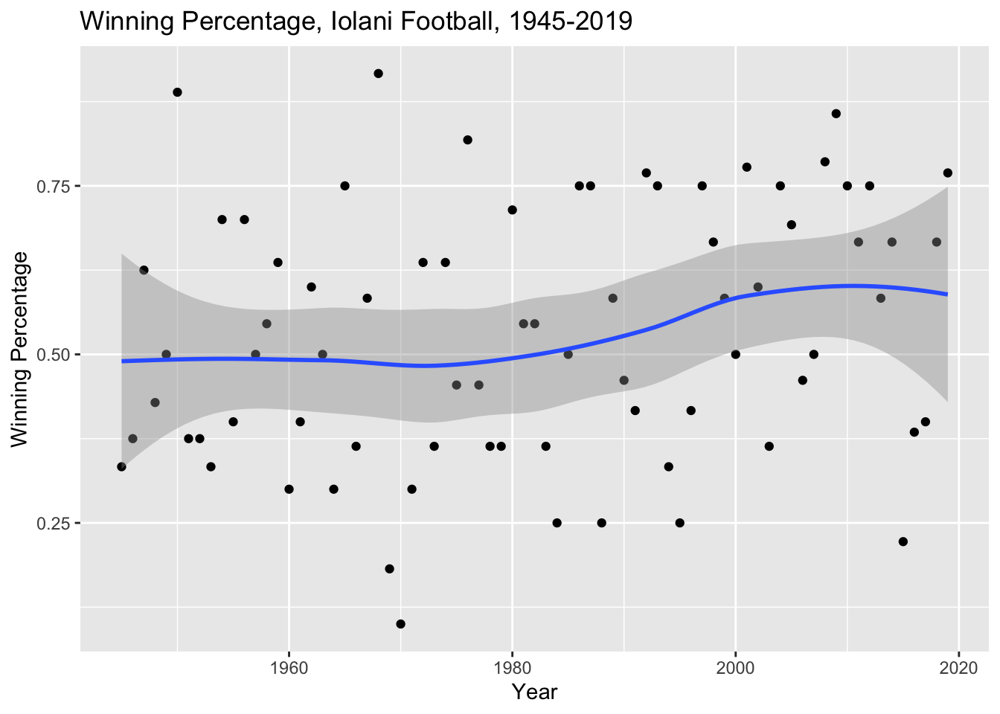
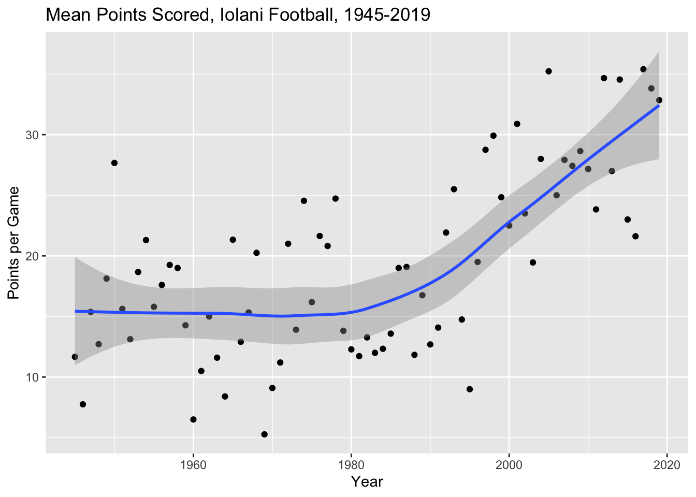
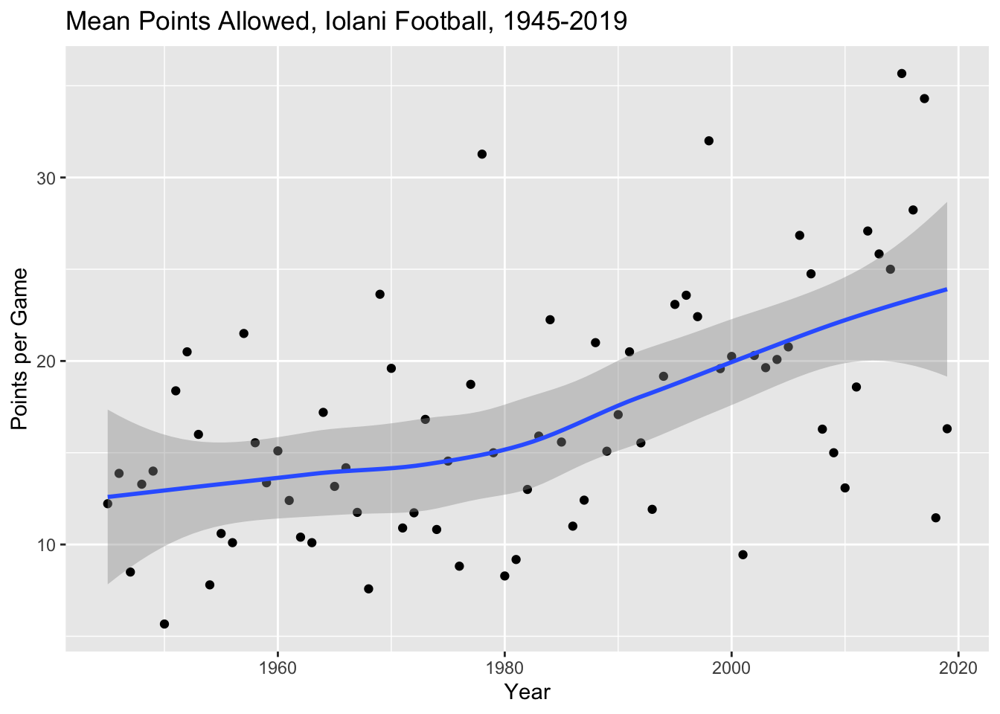

This week the local paper released a season recap of my alma mater’s football team. Included in the article was a link to game results dating back to 1945. It looked like there was an opportunity for a little data analysis on things like home and away records, records versus specific schools, etc.
I downloaded the data and cleaned it for analysis in Google Sheets.
library(dplyr)##
## Attaching package: 'dplyr'## The following objects are masked from 'package:stats':
##
## filter, lag## The following objects are masked from 'package:base':
##
## intersect, setdiff, setequal, unionlibrary(lubridate)##
## Attaching package: 'lubridate'## The following object is masked from 'package:base':
##
## datelibrary(ggplot2)
iolani <- tbl_df(read.csv("../datasets/iolani_football_1945_2019.csv"))
iolani$date <- ymd(iolani$date)
glimpse(iolani)## Observations: 859
## Variables: 13
## $ rowid <int> 1, 2, 3, 4, 5, 6, 7, 8, 9, 10, 11, 12, 13, 14, 15…
## $ date <date> 2019-11-29, 2019-11-23, 2019-10-25, 2019-10-11, …
## $ opponent <fct> Hilo, at Moanalua, Damien, at Castle, Leilehua, R…
## $ result <fct> L, W, W, W, L, W, W, W, W, W, W, L, W, L, W, W, W…
## $ Iolani_score <int> 17, 35, 21, 33, 25, 38, 38, 48, 40, 34, 31, 20, 4…
## $ opp_score <int> 20, 9, 14, 28, 28, 0, 21, 14, 13, 24, 10, 21, 10,…
## $ stadium <fct> Aloha Stadium, , Aloha Stadium, , Aloha Stadium, …
## $ pass_leader <fct> Jonah Chong, Jonah Chong, Jonah Chong, Jonah Chon…
## $ pass_yds <int> 118, 168, 183, 148, 256, 82, 85, 192, 177, 118, 1…
## $ rush_leader <fct> Brock Hedani, Brock Hedani, Brock Hedani, Jonah C…
## $ rush_yds <int> 26, 90, 85, 45, 17, 66, 102, 58, 71, 99, 90, 94, …
## $ receive_leader <fct> Carter Kamana, Carter Kamana, Carter Kamana, Wail…
## $ receive_yds <int> 45, 73, 117, 67, 119, 57, 59, 121, 98, 57, 101, 4…Overall the dataset held data for 859 games with 13 variables.
Overall Records
I looked at the game results first. Overall the Iolani football team has a record of 448-356-21. That’s a winning percentage of 54.3%. Not bad!
Single Season Winning Percentage
I looked at the single season winning percentage and sorted the top seasons.
The top season was the 1968 team, which went 11-0-1 and won the Interscholastic League of Honolulu title. That team featured current Iolani teacher Chucky Nakoa!
win_convert <- function(result) {
ifelse(result == "W", 1, 0)
}
iolani %>% filter(result != "") %>%
mutate(gameyear = year(date), win = win_convert(result)) %>%
group_by(gameyear) %>%
summarize(win_percent = mean(win)) %>% arrange(-win_percent)## # A tibble: 75 x 2
## gameyear win_percent
## <dbl> <dbl>
## 1 1968 0.917
## 2 1950 0.889
## 3 2009 0.857
## 4 1976 0.818
## 5 2008 0.786
## 6 2001 0.778
## 7 1992 0.769
## 8 2019 0.769
## 9 1965 0.75
## 10 1986 0.75
## # … with 65 more rowsiolani %>% filter(result != "") %>%
mutate(gameyear = year(date), win = win_convert(result)) %>%
group_by(gameyear) %>%
summarize(win_percent = mean(win)) %>%
ggplot(aes(x = gameyear, y = win_percent)) + geom_point() + geom_smooth(method = "loess") +
labs(title = "Winning Percentage, Iolani Football, 1945-2019", x = "Year", y = "Winning Percentage")
Home and Away
Away games
There were a lot of games with “at” in their opponent names. To separate out the opponent name from the location, I looked for all rows that began with “at.” It turned out there were only 78 games starting with “at.” That’s less than 10% of games.
iolani %>% filter(grepl("^at", iolani$opponent)) %>%
group_by(result) %>%
summarize(n())## # A tibble: 4 x 2
## result `n()`
## <fct> <int>
## 1 CCL. 1
## 2 L 36
## 3 T 1
## 4 W 40Iolani is 40-36-1 on the road, a winning percentage of 51.9%.
Stadium Location and Neutral Field Games
I then looked at games with a stadium location. I had assumed that these games were neutral field games since a lot of them were at the island’s football stadium, Aloha Stadium. I looked to see how many games were played at a stadium and where these were. There were 585 games played at stadiums and only 274 without a label in the location.
table(iolani$stadium)##
## Aiea Aloha Stadium Cooke Field
## 274 1 302 17
## fairgrounds Farrington Hilo Honolulu
## 1 1 1 1
## Honolulu Stadium Hoolulu Park Isenberg Field Kaiser
## 234 1 1 5
## Kamehameha Mililani Punahou Radford
## 1 1 1 1
## Roosevelt Tacoma Dome Waimea War Memorial
## 7 1 1 6
## Wong Stadium
## 1Some of the games were played at schools so I wondered if those were actually games played against their hosts, rather than true neutral field games. By inspecting the data in Google Sheets I was able to confirm that all the games that were played at schools (e.g., Kaiser) were played against opponents from other schools (i.e., neutral field games).
Interestingly enough in 2005, Iolani played in the Tacoma Dome against Capital High School (Washington), it was the first time Iolani had played an indoor football game and I assume the last since there aren’t any local places that you can play indoors here.
Here’s the neutral field record:
iolani %>% filter(grepl("[[:alpha:]]", iolani$stadium)) %>%
group_by(result) %>%
summarize(n())## # A tibble: 4 x 2
## result `n()`
## <fct> <int>
## 1 CCL. 1
## 2 L 261
## 3 T 18
## 4 W 305At neutral fields, Iolani is 305-261-18, a winning percentage of 52.2%.
Home Games
That left the home record to calculate. I filtered out the “at” and neutral field games to come up with the following result.
homegames <- iolani %>% filter(!grepl("[[:alpha:]]", iolani$stadium))
homegames <- homegames %>% filter(!grepl("^at", homegames$opponent))
homegames %>% group_by(result) %>%
summarize(n())## # A tibble: 5 x 2
## result `n()`
## <fct> <int>
## 1 "" 31
## 2 L 59
## 3 L (OT) 1
## 4 T 2
## 5 W 107At home Iolani is 107-60-2, a winning percentage of 63.3%!
Record against Specific Schools
Calculating Iolani’s record against specific schools is complicated by the fact that the away games have “at” in their opponent names. To remove this I used a regular expression substitution.
iolani$opponent_school <- sub("at ", "", iolani$opponent)
glimpse(iolani)## Observations: 859
## Variables: 14
## $ rowid <int> 1, 2, 3, 4, 5, 6, 7, 8, 9, 10, 11, 12, 13, 14, 1…
## $ date <date> 2019-11-29, 2019-11-23, 2019-10-25, 2019-10-11,…
## $ opponent <fct> Hilo, at Moanalua, Damien, at Castle, Leilehua, …
## $ result <fct> L, W, W, W, L, W, W, W, W, W, W, L, W, L, W, W, …
## $ Iolani_score <int> 17, 35, 21, 33, 25, 38, 38, 48, 40, 34, 31, 20, …
## $ opp_score <int> 20, 9, 14, 28, 28, 0, 21, 14, 13, 24, 10, 21, 10…
## $ stadium <fct> Aloha Stadium, , Aloha Stadium, , Aloha Stadium,…
## $ pass_leader <fct> Jonah Chong, Jonah Chong, Jonah Chong, Jonah Cho…
## $ pass_yds <int> 118, 168, 183, 148, 256, 82, 85, 192, 177, 118, …
## $ rush_leader <fct> Brock Hedani, Brock Hedani, Brock Hedani, Jonah …
## $ rush_yds <int> 26, 90, 85, 45, 17, 66, 102, 58, 71, 99, 90, 94,…
## $ receive_leader <fct> Carter Kamana, Carter Kamana, Carter Kamana, Wai…
## $ receive_yds <int> 45, 73, 117, 67, 119, 57, 59, 121, 98, 57, 101, …
## $ opponent_school <chr> "Hilo", "Moanalua", "Damien", "Castle", "Leilehu…Now I could calculate records against specific schools, such as our rival Punahou. It turns out we’re not that great against Punahou: 38-70-1 (34.2%).
iolani %>% filter(opponent_school == "Punahou") %>%
group_by(result) %>%
summarize(n())## # A tibble: 3 x 2
## result `n()`
## <fct> <int>
## 1 L 70
## 2 T 3
## 3 W 38How about perennial state champ Saint Louis? Even worse! 23-79-4 (21.7%).
iolani %>% filter(opponent_school == "Saint Louis") %>%
group_by(result) %>%
summarize(n())## # A tibble: 3 x 2
## result `n()`
## <fct> <int>
## 1 L 79
## 2 T 4
## 3 W 23Kamehameha? Just as bad. 33-72-4, (30.3%).
iolani %>% filter(opponent_school == "Kamehameha") %>%
group_by(result) %>%
summarize(n())## # A tibble: 3 x 2
## result `n()`
## <fct> <int>
## 1 L 72
## 2 T 4
## 3 W 33Recent rival Damien? Actually pretty good! 77-3-21 (76.2%).
iolani %>% filter(opponent_school == "Damien") %>%
group_by(result) %>%
summarize(n())## # A tibble: 4 x 2
## result `n()`
## <fct> <int>
## 1 L 20
## 2 L (OT) 1
## 3 T 3
## 4 W 77Scoring Averages
I calculated the points scored per game and the points allowed per game by Iolani. It looks like the offense has improved dramatically over time, probably in line with changes in the game of football overall.
iolani %>% filter(!is.na(Iolani_score)) %>%
mutate(gameyear = year(date)) %>%
group_by(gameyear) %>%
summarize(off_scoring = mean(Iolani_score), def_scoring = mean(opp_score)) %>%
ggplot(aes(x = gameyear, y = off_scoring)) + geom_point() + geom_smooth(method = "loess") +
labs(title = "Mean Points Scored, Iolani Football, 1945-2019", x = "Year", y = "Points per Game")
I also looked at average points allowed per season.
iolani %>% filter(!is.na(Iolani_score)) %>%
mutate(gameyear = year(date)) %>%
group_by(gameyear) %>%
summarize(off_scoring = mean(Iolani_score), def_scoring = mean(opp_score)) %>%
ggplot(aes(x = gameyear, y = def_scoring)) + geom_point() + geom_smooth(method = "loess") +
labs(title = "Mean Points Allowed, Iolani Football, 1945-2019", x = "Year", y = "Points per Game")
Offensive Category Leaders
There are only so many things that can be done with single game offensive yards leaders, but we can at least calculate the top 10 historical performances for each type (passing, rushing, receiving).
Top Passing Yard Games
Tai-John Mizutani had the top 4 passing yard games in Iolani history, 3 of which came during the 2017 season. He is currently on the football team at Central Washington University.
iolani %>% select(pass_leader, pass_yds, date, opponent, result, Iolani_score, opp_score) %>%
arrange(-pass_yds)## # A tibble: 859 x 7
## pass_leader pass_yds date opponent result Iolani_score opp_score
## <fct> <int> <date> <fct> <fct> <int> <int>
## 1 Tai-John Mi… 503 2017-08-26 Kaimuki W 57 34
## 2 Tai-John Mi… 485 2015-10-16 Kamehame… L 24 39
## 3 Tai-John Mi… 430 2017-09-29 St. Fran… W 45 29
## 4 Tai-John Mi… 426 2017-09-16 Pac-Five W 55 20
## 5 Reece Foy 391 2011-09-09 Punahou L 18 38
## 6 Kiran Kepoo 386 2004-08-21 Farringt… W 24 7
## 7 Kiran Kepoo 381 2004-10-01 Pac-Five W 38 13
## 8 Ryan Dung 369 2006-11-24 King Kek… L 37 38
## 9 Austin Jim … 367 2013-10-04 Pac-Five W 31 19
## 10 Reece Foy 364 2012-08-18 at Waipa… W 35 34
## # … with 849 more rowsTop Rushing Yard Games
Joe Igber has 6 of the top 10 on this list. He went on to play college football at California and rushed for over 3000 yards in college.
iolani %>% select(rush_leader, rush_yds, date, opponent, result, Iolani_score, opp_score) %>%
arrange(-rush_yds)## # A tibble: 859 x 7
## rush_leader rush_yds date opponent result Iolani_score opp_score
## <fct> <int> <date> <fct> <fct> <int> <int>
## 1 Joe Igber 352 1998-10-23 Pac-Five W 45 35
## 2 Joe Igber 312 1998-09-19 Pac-Five W 40 29
## 3 Joe Igber 278 1998-11-13 Damien W 31 7
## 4 Joe Igber 262 1997-10-04 Pac-Five W 45 7
## 5 Raynold Stow… 261 2002-09-20 Pac-Five W 35 27
## 6 Joe Igber 251 1998-10-09 Damien W 49 32
## 7 Joe Igber 240 1997-11-15 Damien W 17 12
## 8 Raynold Stow… 237 2002-11-01 Damien W 23 12
## 9 Kyle Chang 228 1992-10-23 Damien W 14 0
## 10 Willie Keola 228 1972-11-24 Punahou W 34 25
## # … with 849 more rowsTop Receiving Yard Games
Unlike the passing and rushing yard leaders, there are a lot of different names on this list. Carter Kamana finished his high school senior season this year. Keoni-Kordell Makekau plays Division 1 football at Navy. Raul Pacheco won the national championship at Montana and had the most receptions in Montana history until 2019.
iolani %>% select(receive_leader, receive_yds, date, opponent, result, Iolani_score, opp_score) %>%
arrange(-receive_yds)## # A tibble: 859 x 7
## receive_leader receive_yds date opponent result Iolani_score
## <fct> <int> <date> <fct> <fct> <int>
## 1 Carter Kamana 222 2017-09-16 Pac-Five W 55
## 2 Keoni-Kordell… 220 2013-10-04 Pac-Five W 31
## 3 Raul Pacheco 219 1992-11-14 Saint L… L 14
## 4 Jonah Miyazawa 193 2017-11-03 Lahaina… L 27
## 5 Micah Kalama 189 2004-10-01 Pac-Five W 38
## 6 Raul Pacheco 179 1993-09-11 Saint L… L 7
## 7 Tanner Nishio… 175 2012-09-20 at Kame… L 34
## 8 Keoni-Kordell… 169 2015-10-16 Kameham… L 24
## 9 Nicholas Kenn… 169 2015-10-02 at Puna… L 23
## 10 Lionel Fujioka 166 2006-08-25 at Mili… L 23
## # … with 849 more rows, and 1 more variable: opp_score <int>Discussion
It was an interesting look back at Iolani football over the years. As a casual fan, I found some interesting stories and tidbits that I never knew, like that Tacoma game, or the fact that Raul Pacheco was the career leader in receptions at Montana for 20 years. I never knew about how successful Joe Igber was in college and I found out (again?) about the 1968 ILH champion team. It was also a pretty good way to brush off my dplyr skills. Iolani no ka oi!